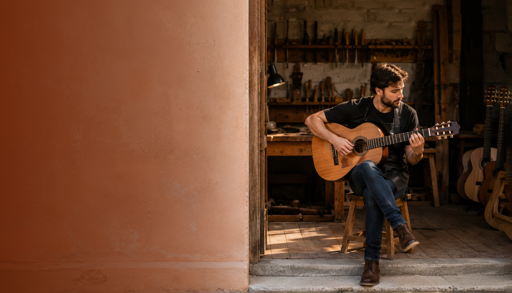
Instrumentos con alma
Una experiencia de creación personalizada donde construís una pieza única.
- Duración estimada
- 6 a 10 meses
- Modalidad
- Presencial personalizada
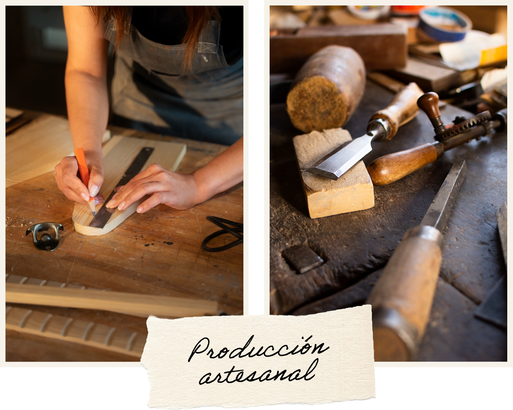
¿Cómo es la modalidad de trabajo?
Cada proyecto se desarrolla de manera gradual, respetando los tiempos de aprendizaje y construcción de cada alumno. El proceso permite afianzar las técnicas y comprender cada etapa de la fabricación de la guitarra.
- Clases prácticas en taller.
- Seguimiento personalizado.
- Material de consulta.
- Asistencia técnica permanente.
- Correcciones y revisiones durante cada etapa.
Todo lo que incluye
- Acceso completo al taller profesional.
- Uso de herramientas especializadas.
- Asesoramiento en selección de maderas.
- Guías técnicas impresas y digitales.
- Plantillas y documentación de trabajo.
- Espacios de consulta en plataforma virtual.
- Evaluación técnica y sonora final.
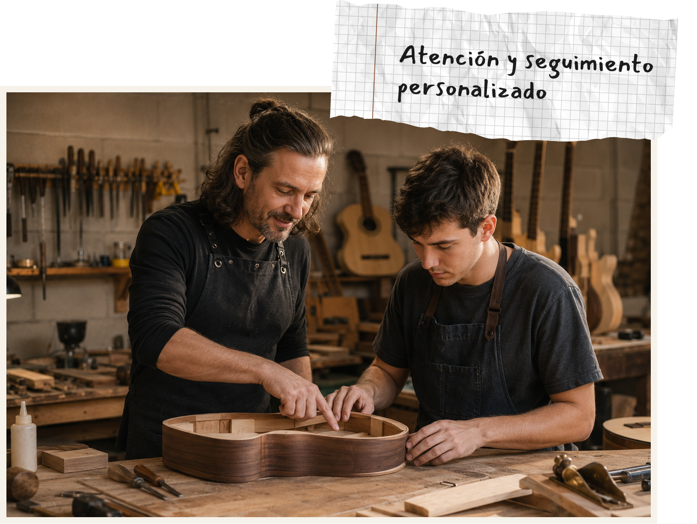
Cronograma general

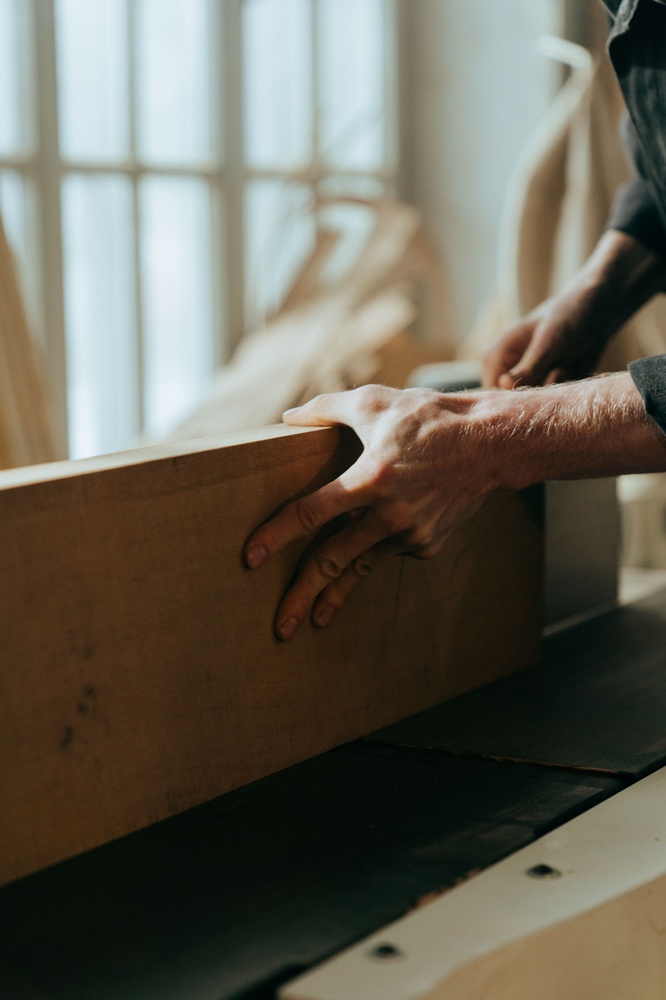
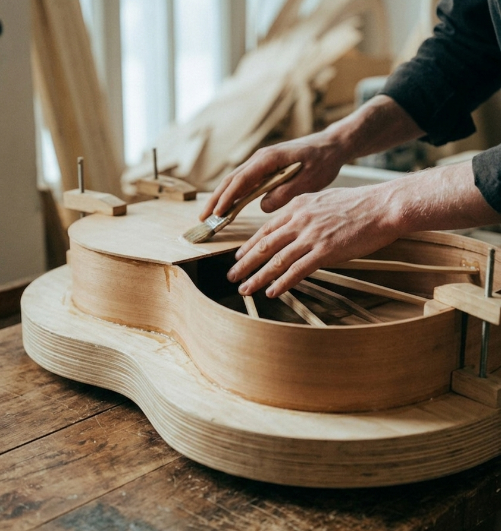
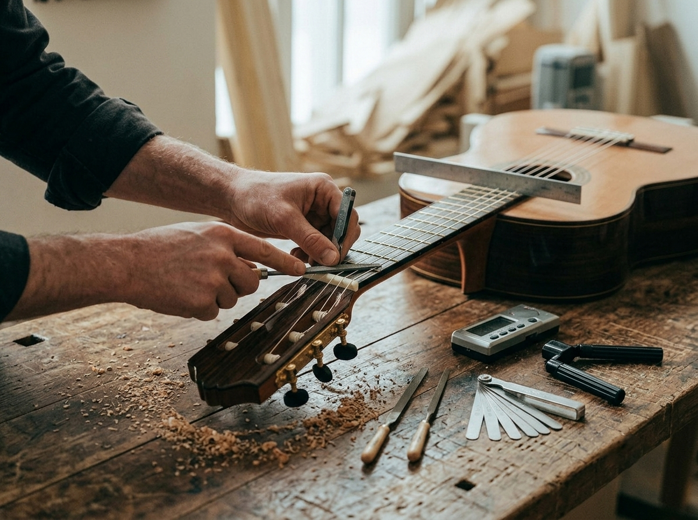
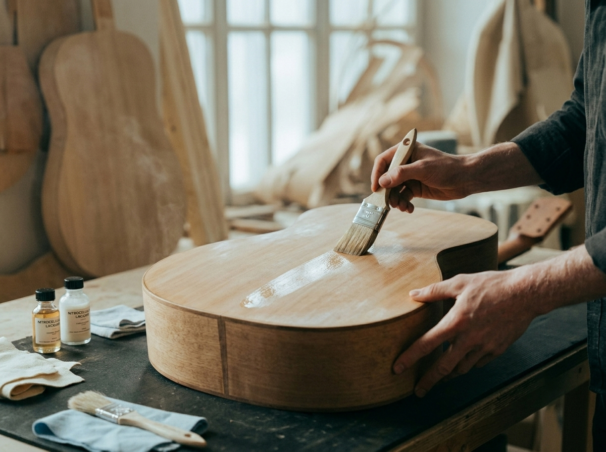
Los tiempos pueden variar según la complejidad del proyecto y la disponibilidad del alumno.
Preguntas frecuentes
No. El programa está diseñado para acompañar tanto a principiantes como a aficionados con experiencia.
Sí. Existe una gran variedad de diseños de guitarra para desarrollar dentro del curso, permitiéndote personalizar aspectos estéticos y constructivos según tus objetivos y preferencias. Y si tu interés está orientado a otro instrumento, el taller también ofrece cursos específicos para que puedas abordar su construcción con el mismo acompañamiento y nivel de detalle.
Cada instrumento tiene sus propios tiempos. El acompañamiento contempla las particularidades de cada proyecto.
Sí. El taller dispone del equipamiento necesario para todas las etapas del proceso de construcción de la guitarra, desde el trabajo inicial de la madera hasta los ajustes finales. De este modo, podés concentrarte plenamente en el aprendizaje y en el desarrollo de tu proyecto, utilizando herramientas y dispositivos adecuados para cada operación bajo la guía permanente de los docentes.
Aprendé junto a maestros luthiers y músicos
Tocá o hacé clic sobre cada tarjeta para conocer su trayectoria
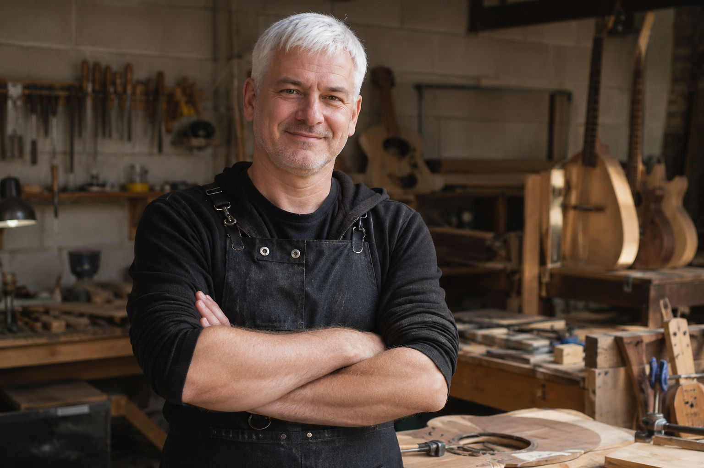
Tomás Herrera
EspecializaciónLuthería y construcción de violines.
Música preferidaRepertorio clásico y barroco.
Violinista y luthier con más de quince años de experiencia en restauración y construcción artesanal de instrumentos de arco, formado en talleres especializados y con actividad docente permanente.
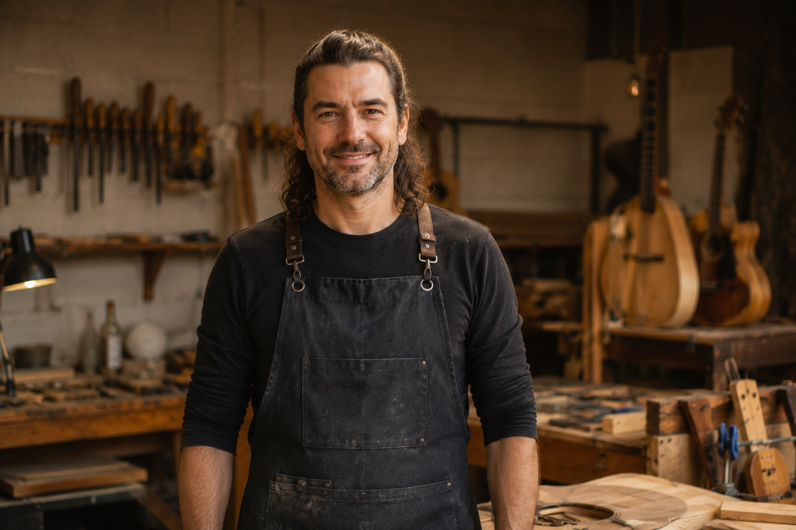
Santiago Ferrer
EspecializaciónGuitarra clásica y eléctrica.
Música preferidaFolklore argentino y jazz.
Guitarrista y luthier dedicado al diseño y ajuste de guitarras, con trayectoria en escenarios y en la enseñanza de técnicas de construcción y mantenimiento.
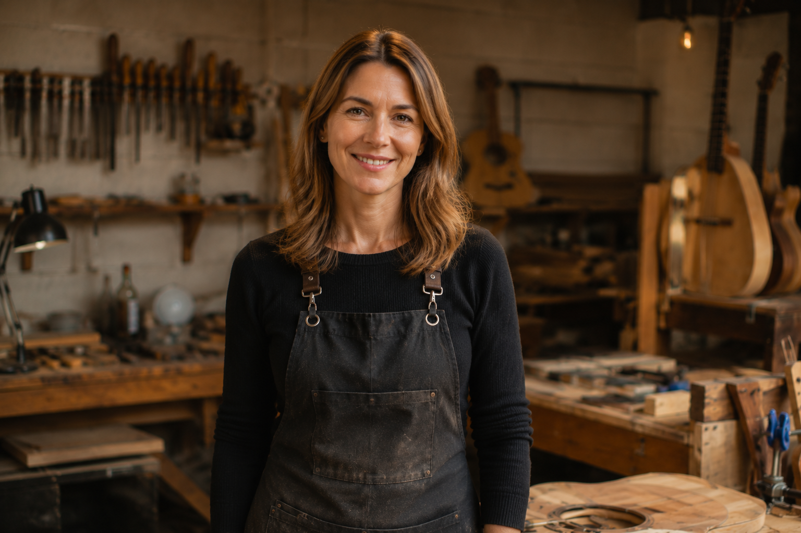
Valentina Ríos
EspecializaciónPiano.
Música preferidaImpresionismo francés y música contemporánea.
Pianista y docente con estudios superiores en interpretación y amplia experiencia en pedagogía musical y acompañamiento de ensambles.
Testimonios
Pasá el cursor o tocá una tarjeta para detener
Un vistazo al proceso.
Instrumentos construidos por nuestros alumnos, reflejo del proceso y la dedicación que acompañan cada construcción.

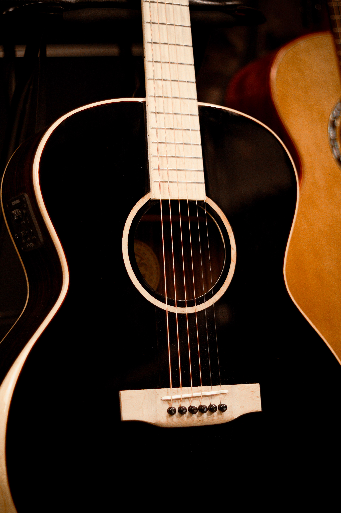
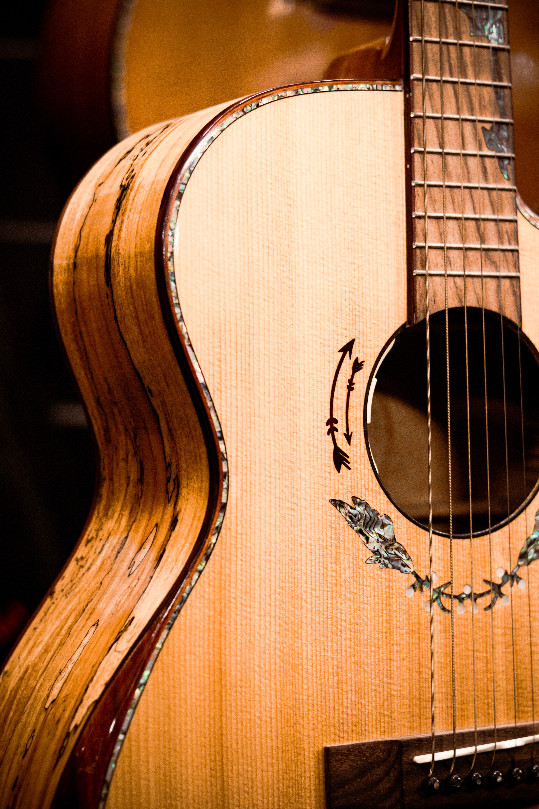
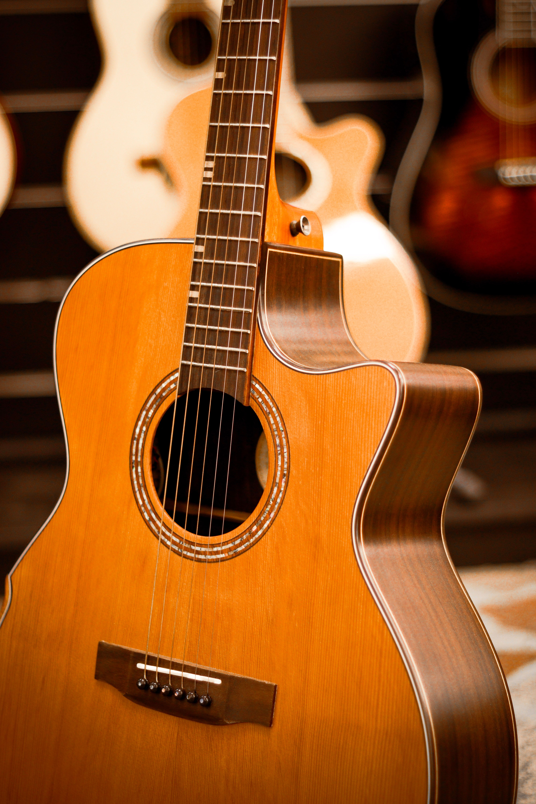
Tu proyecto empieza acá
Los cupos son reducidos para una asegurar una atención personalizada. Reservá tu lugar y hacé realidad la guitarra que siempre soñaste construir.